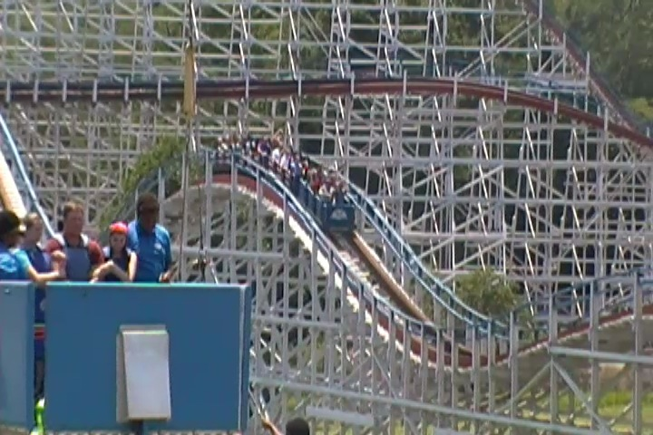

| |
Great American Scream Machine Review

We're here at Six Flags Over Georgia and todays ride we'll be reviewing is Great American Scream Machine. This is essentially the parks classic wooden coaster. And looking at the ride, it doesn't look like anything special. It sort of just looks like you're generic cruiser snoozer. On and off, classic ride. Fun little woodie. Nothing special. Well...there's really not much here. Except, no. You know the pattern. This is NOT a cruiser snoozer. I mean, this thing has some airtime. Some REALLY good airtime. Just like its next door neighbor, Blue Hawk, Great American Scream Machine is also really underrated. Except this ride isn't hated by other people. But it still is a really good ride. So yeah. Hop in the cars, down go the lap bars, and we're off. We roll around a big turn and start climbing up the lifthill. Yeah. You notice anything about this ride? Yeah. It's actually pretty big. OK, it's not huge or anything. But it is bigger than most rides like this. We eventually reach the top, get a good view of nothing, and head down the first drop. Hey. That extra height means that we gain extra speed. And yeah. I really enjoy that. And that extra speed is really going to help throughout the course of this ride. We then head up a big hill, which sadly takes most of our speed. But things will get good soon. We crawl around a right turn, and then head down another decent sized drop. And now we've got our speed back. We then head over an airtime hill, and there's some decent airtime here. We head back down, go over another airtime hill, and...yeah. Back out of our seats. This is really cool. We then head up another hill, and hey. Another pop of airtime here! This gets us rolling around another sort of turnaround. Yeah, there aren't any crazy laterals here. But to be fair, it doesn't lollygag through those turns either. We then head down the drop, and rise over a couple more hills. Hey. Airtime! Hey! Airtime! That was fun. We head up a small little hill, and POP!!! Ejector air! Oh yeah. Getting stronger now. And to make things even better, we get a good slam right here. So this ride has some laterals now as well. =) We dip back down, and head into even more airtime hills. And now, they're really f*cking strong. WEE!!! SLAM!!! WEE!!! BANG!!! WEE!!! EJECT!!! And into the brake run. Damn. I know I generally tend to like these out and back wooden coasters, but this one really just throws you up and around. It's really strong, very agressive, and just a really fun wooden coaster. So yeah. I highly recommend this ride when at Six Flags Over Georgia.
8/10
Location: Six Flags Over Georgia
Opened: 1973
Built by: Philadelphia Toboggan Coasters
Last Ridden: June 27, 2016
Great American Scream Machine Photos


Home
|